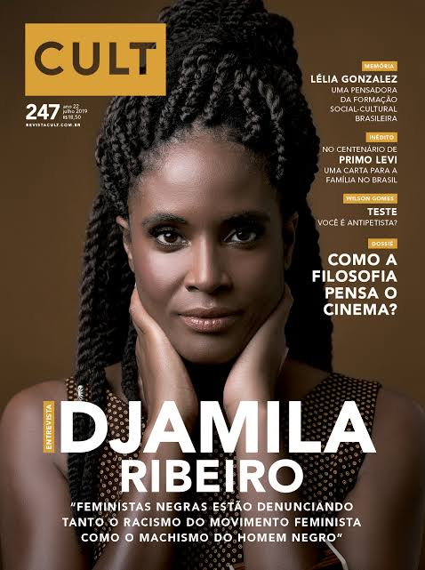

Djamila Ribeiro é graduada em Filosofia pela Universidade Federal de São Paulo (UNIFESP). Durante sua trajetória acadêmica, ela se destacou ao aprofundar seus estudos na Filosofia Política, focando especialmente na teoria feminista e na negritude. Em 2015, completou seu mestrado, onde analisou as estruturas de poder e as experiências vividas por mulheres negras na sociedade brasileira. Sua pesquisa oferece uma crítica incisiva sobre as formas de opressão, e suas contribuições acadêmicas têm sido fundamentais para o entendimento da intersecionalidade nas discussões contemporâneas sobre raça e gênero.
2. Atuação como Autora
Djamila é autora de várias obras impactantes, entre elas "O que é lugar de fala?", que se tornou um marco na discussão sobre representatividade e reconhecimento das vozes silenciadas na sociedade. Este livro, acessível e profundo, convida leitores a refletir sobre os poderes e as limitações que diferentes perspectivas sociais impõem. Em 2020, seu livro "Pequeno Manual Antirracista" foi o mais vendido no Brasil, refletindo o crescente interesse e urgência nas questões raciais e de justiça social. Além disso, Djamila contribui regularmente com artigos e ensaios para diversas publicações, expandindo o debate sobre os direitos das mulheres e a luta antirracista.
3. Contribuições para o Feminismo Negro
Como uma das principais vozes do feminismo negro no Brasil, Djamila Ribeiro tem sido essencial para fortalecer a intersecionalidade dentro das pautas feministas. Seu trabalho no ativismo e na escrita tem ajudado a visibilizar as lutas enfrentadas por mulheres que sofrem múltiplas formas de discriminação. Djamila utiliza suas plataformas para destacar as experiências e as narrativas de mulheres negras, que muitas vezes são invisibilizadas em discussões feministas tradicionais, enfatizando que a luta pela igualdade deve considerar a diversidade das vozes femininas. Ela também promove diálogos sobre como as diferentes identidades de gênero e raça interagem nas lutas sociais contemporâneas.

4. Engajamento Político
Djamila Ribeiro foi nomeada secretária-adjunta de Direitos Humanos e Cidadania na cidade de São Paulo em 2016, onde trabalhou ativamente em políticas voltadas para a promoção dos direitos de grupos marginalizados e pela inclusão social. Sua atuação política vai além das instituições, estendendo-se à sua presença nas redes sociais, onde frequentemente aborda temas controversos e desafiadores. Djamila defende a importância da participação ativa da sociedade civil na construção de políticas públicas, e seu trabalho é um exemplo de como a teoria pode se transformar em ação efetiva em prol dos direitos humanos e sociais. Por meio de sua voz, ela inspira novas gerações a continuarem a luta pela justiça e igualdade.